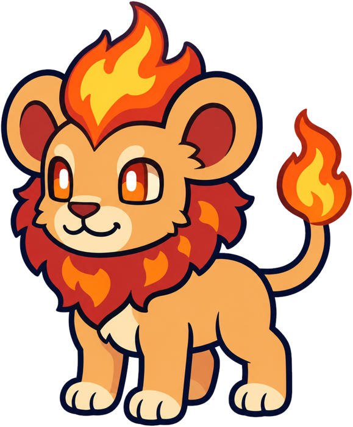

 Fire
Fire Wind
WindTap a stage to read its story.
Pyrcub is a small lion cub with a tiny tuft of genuine flame where its mane should be, and an orange-tan coat that blends into the sun-baked dunes so well that only the flame-tuft gives it away. It bounds rather than walks, clearing small sand ridges in two easy leaps, and its tail-tip flickers with a tiny flame when it is pleased. In the sand dunes it follows older trainers at a respectful distance, watching everything they do before trying it - then attempting it with considerable confidence the next morning before breakfast.
Field note: Pyrcub's flame-tuft produces exactly no smoke regardless of wind speed, which young naturalists have tested repeatedly.

Sand Dunes. Pyrcub wandered away from its family in the warm dunes. Help Pyrcub find the way back!
Watched over by the Guardian Hunter.
Personality: Brave
Signature move: Flame Hug
What is a family of lions called?
Share a Bond Food that matches its types to become friends. Pyrcub loves:
A Bond Food is not a trick. It joins your spirit with the Kimuro's spirit, and only when it chooses you.
Mazes, puzzles, cards and a Bond Mark medal in the printable Sand Dunes adventure.
Print the adventure